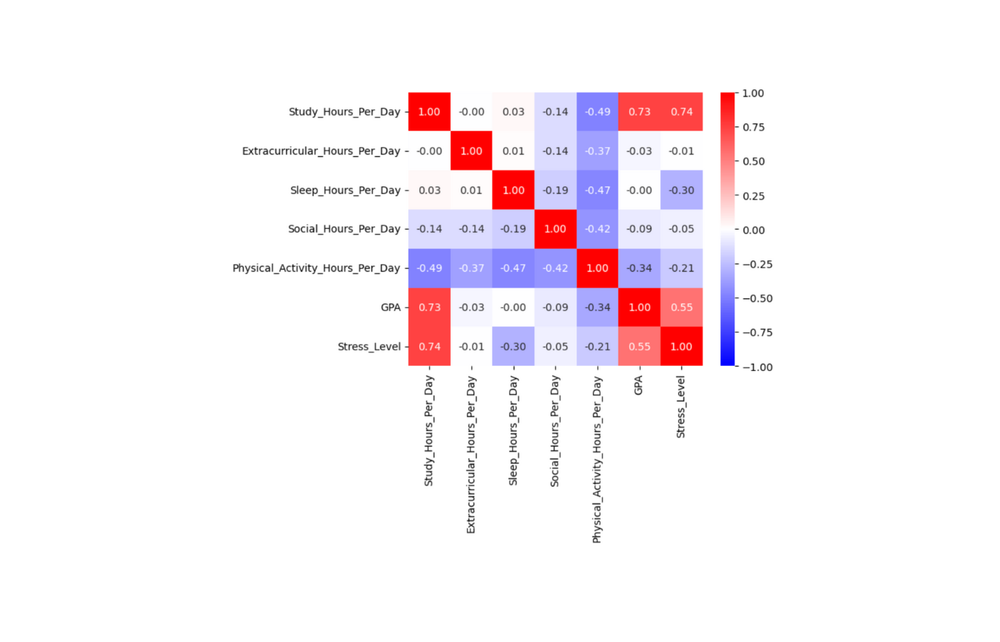

このプロジェクトは、私が高安研究室に所属していた際に大学の授業課題として実施したものです。2024年11月に、学生の日常生活と学業成績の関係を分析する研究プロジェクトとして取り組みました。
プロジェクト名
Research Project: 学生の日常生活と学業成績
実施時期
2024年11月
目的・概要
本プロジェクトの目的は、学生の日常生活（勉強時間、課外活動、睡眠、社交、運動など）が学業成績（GPA）やストレスレベルにどのような影響を与えるかをデータ分析・機械学習を用いて明らかにすることです。2000人分の学生データを用い、各生活習慣とGPA・ストレスの関係を統計的に解析し、さらに成績やストレスの予測モデルを構築しました。
使用技術・ツール
Python（pandas, matplotlib, seaborn, scikit-learn）を用いてデータの前処理・可視化・機械学習モデルの構築を行いました。ロジスティック回帰、ランダムフォレスト、決定木など複数のモデルを比較し、特徴量の重要度分析も実施しました。
成果・考察
分析の結果、特に「勉強時間」がGPAに強い正の影響を与える一方、「睡眠時間」や「運動時間」も一定の影響を持つことが分かりました。ストレスレベルについても、生活習慣のバランスが重要であることが示唆されました。機械学習モデルによる成績・ストレスの分類精度はおおむね70〜77%程度であり、生活習慣データからある程度の予測が可能であることが確認できました。
制作過程
まず、学生生活に関するデータセットを収集・前処理し、各変数の分布や相関を可視化しました。その後、GPAやストレスレベルを目的変数とした分類モデルを複数構築し、精度や特徴量の重要度を比較しました。最終的に、得られた知見をもとに、学生の生活改善やストレス軽減に向けた提案も考察しました。